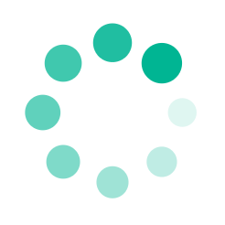

<button class="cambio-camara rounded-circle" (click)="cambiarPerspectiva()"></button>


<button class="btn-flecha flecha-izq rounded-circle" (click)="islaAnterior()"><i class="fas fa-arrow-left"></i></button>
<button class="btn-flecha flecha-dcha rounded-circle" (click)="islaSiguiente()"><i class="fas fa-arrow-right"></i></button>

<ng-template #comidas class="modalComidasFondo">
    <app-comidas [modalRefComidas]="modalRef"></app-comidas>
</ng-template>

<div class="loader quicksand-font" *ngIf="loading">
    <div>
        <p>Estamos preparando tus islas</p>
        <p>{{porcentaje}}%</p>
        <div>
            
        </div>
    </div>
</div>

<div class="engine-wrapper">
    <canvas #rendererCanvas id="renderCanvas" [ngStyle]="{'background-image': cieloImagen, 'background-repeat': backrep}"></canvas>
</div>
